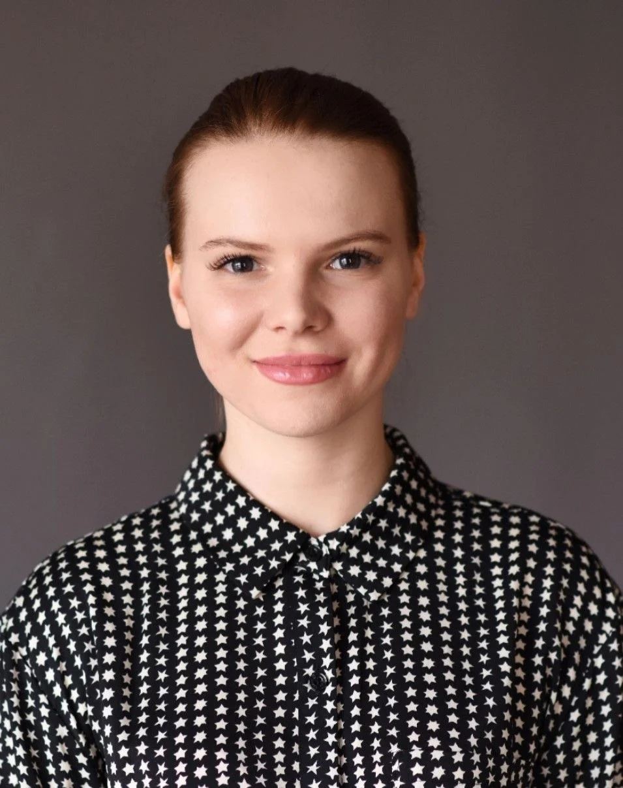
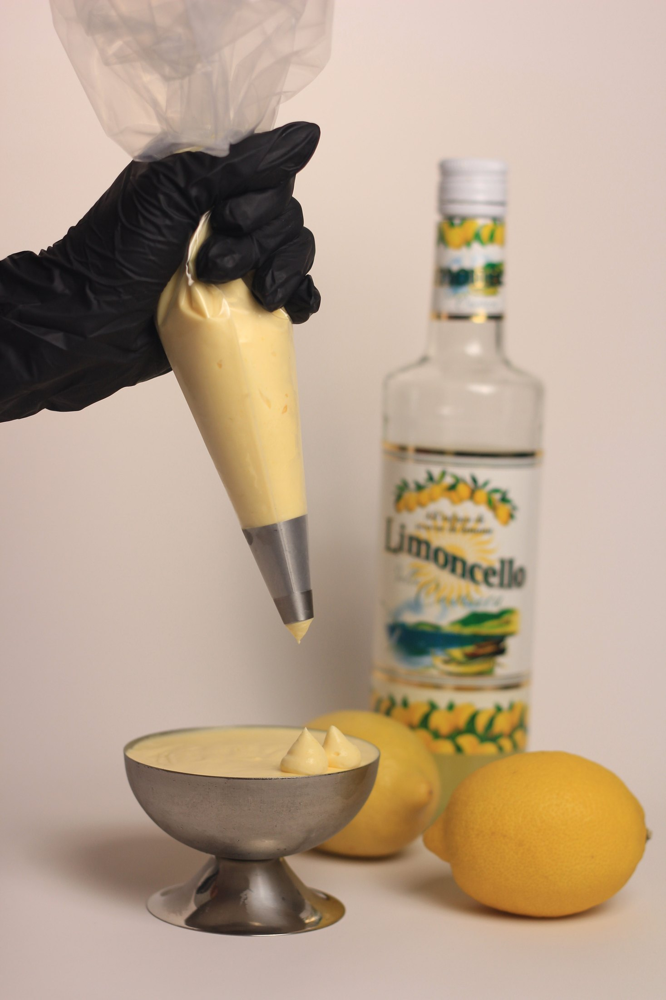

Since 2018
Freelance pastry chef
Independent practice
Original recipes, custom orders and workshops, with work spanning pastry, bread and event desserts.
THE CHEF / LINA
Hello, I’m Lina. A pastry chef, baker and recipe developer, bringing thoughtful desserts to the places where people gather.
Shanghai · Projects across China

WHERE IT BEGAN
My love of pastry began in my grandmother’s kitchen. She was a confectioner, and I grew up helping her knead dough and decorate cakes. Making something for other people became part of what I loved about baking.
That curiosity took me through Russian classics, vegan desserts, layered cakes and French bread-making. Workshops, custom orders and professional kitchens helped me connect the creative side of pastry with the practical details of making and serving it.
Today, Lina.Pastry brings that experience to dessert development, kitchen training and events. I create original recipes and adapt existing ones around the people, the kitchen and the occasion.
EXPERIENCE
Since 2018
Independent practice
Original recipes, custom orders and workshops, with work spanning pastry, bread and event desserts.
Jan–Sep 2023
Touch and Melt · Dubai, UAE
Professional pastry experience in Dubai.
2017–2018
Sofia café and bakery · Tashkent, Uzbekistan
Bakery experience in a café and bakery setting.

EDUCATION & CONTINUING PRACTICE
Boulangerie and Patisserie diploma
Basque cheesecakes
Gelato and tiramisu
Cheesecakes and portion cakes
Baking, vegan desserts and modern décor
Professional event planning management and party planning certificates
2018–2022 · Master’s degree, MPA · University of Shanghai for Science and Technology
2014–2018 · English philology · Uzbekistan World Languages University
2009–2012 · Chinese philology · Lyceum of Oriental Languages
HOW I WORK
A dessert should feel at home in the place that serves it. Your concept is the starting point for recipe development.
Recipe and preparation sheets belong alongside kitchen training. I do not leave a recipe without showing the team how to work with it.
A single slice, a sweet table or a shared workshop asks for a different approach. The format matters as much as the finish.
LET’S CREATE TOGETHER
Share your venue, city and what you would like to create. We can shape the next step together.